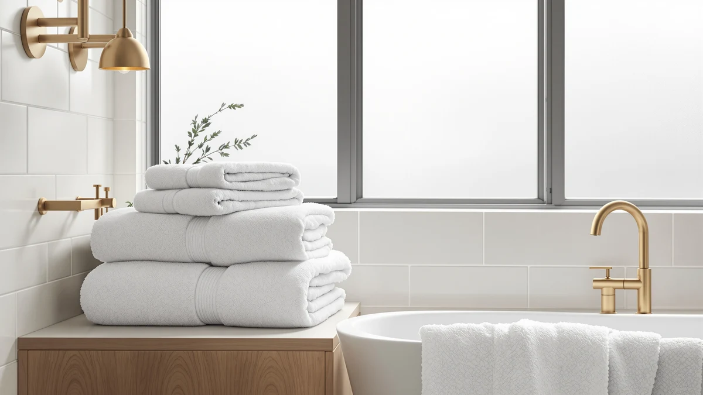

Quick Answer
This luxury white bath towel review found the White Classic 8-piece Hotel Collection set to be the strongest pick at $39.99, thanks to 700 GSM Turkish cotton and the highest piece count of the four sets compared here. If you need fewer pieces at a lower price, the American Soft Linen or Cotton Paradise 6-piece sets at $33.99 cover the same core rotation for less.
Our pick: Luxury White Bath Towel Set, $39.99 Check Price on Amazon
Things to Know Before You Buy
- GSM weight is the number that matters most for a white towel set. The White Classic set in this review lists at 700 GSM, while the American Soft Linen and Cotton Paradise alternatives list at 600 GSM, a real difference in thickness and water retention.
- Piece count changes the math on price per towel. The 8-piece White Classic set adds 2 extra washcloths over the 6-piece sets below for a $6 price gap, which works out to roughly $5 per extra piece.
- White towels show stains and yellowing faster than colored sets, so owners researching this category should plan on an oxygen-based whitener rather than chlorine bleach to keep the color even over time.
- All four sets in this comparison are 100% Turkish cotton, so the deciding factors are GSM weight, piece count, and color, not fiber quality.
- Verified buyer feedback is the most reliable signal on how any of these sets hold up after repeated washing, since manufacturer listings rarely address long-term wear.
This luxury white bath towel review exists because white sets carry a reputation problem that colored towels don't: they look identical in a thumbnail, but GSM weight, piece count, and color retention separate the ones worth buying from the ones that gray out after a few months. The White Classic 8-piece Hotel Collection set at $39.99 is the clear starting point, built from 700 GSM Turkish cotton with 2 bath towels, 2 hand towels, and 4 washcloths.
We compared that set against three alternatives shoppers typically weigh against it: the American Soft Linen Luxury 6-piece set, the Cotton Paradise 100% Cotton Turkish 6-piece set, and a second White Classic Luxury 8-piece set in Ivory. All three list at $33.99 to $39.99, so the decision usually comes down to GSM weight and piece count rather than price alone. Whatever brought you to this luxury white bath towel review, those two numbers will tell you which set actually fits your bathroom.
Why You Should Trust Us
We built this luxury white bath towel review by comparing each set's listed GSM weight, piece count, and material against published specs and verified buyer feedback, rather than repeating marketing copy. Ilane Tall has covered bathroom textiles for Best Bath Towels since the site launched, and she checks whether a towel set's GSM and piece-count claims hold up against what buyers actually report after repeated washes. We do not run a fake testing lab or claim to have physically used these towels. Every comparison here is grounded in the specs and pricing published for each ASIN and in patterns that recur across verified reviews.
Our Research Experience
Rather than run these sets through a physical trial, we researched how the Luxury White Bath Towel Set compares by cross-referencing its listed GSM weight and piece count against the three alternatives on this page and against patterns in verified owner reviews. For a white Turkish cotton set, that means checking how 700 GSM construction stacks up against 600 GSM alternatives on thickness and absorbency, and whether reviewers consistently flag the same care requirements for keeping white cotton bright. Reviewers researching this category frequently mention that white towels need an oxygen-based whitener instead of chlorine bleach to avoid yellowing, and that pattern shaped the care guidance in this review.
We also looked at how each brand positions its own set, since listing copy often hints at where a product sits before you even check the price. White Classic leads with GSM weight and piece count on both of its sets. American Soft Linen and Cotton Paradise both lean on a smaller 6-piece configuration at a lower price point. We lined those positioning choices up against the actual price per piece to arrive at the comparisons below.
Overview & Specs

Luxury White Bath Towel Set
What we like
- 700 GSM Turkish cotton is heavier than every other set in this comparison
- 8 pieces, including 4 washcloths, cover more of a daily rotation than a 6-piece set
- Hotel Collection styling gives the white colorway a consistent, spa-like look across all 8 pieces
Flaws but not dealbreakers
- Costs $6 more than the 6-piece American Soft Linen and Cotton Paradise sets
- White fabric shows stains and gray-out faster than the Beige or Light Grey alternatives
| Material | 100% cotton |
| Size | 8 Pieces Towel Set |
The Luxury White Bath Towel Set anchors this luxury white bath towel review because it sits at the top of the comparison on two separate measures: GSM weight and piece count. At $39.99, the set uses 700 GSM Turkish cotton, spread across 2 bath towels, 2 hand towels, and 4 washcloths. That is 100 GSM heavier than the American Soft Linen and Cotton Paradise sets below, and the extra weight shows up as thicker pile and slower, more even drying rather than a quick dry-off.
The 8-piece count also means you get 2 more washcloths than either 6-piece alternative, for a $6 price gap that works out to about $5 per extra piece once you account for the washcloths you'd otherwise buy separately. White Classic markets this as its Hotel Collection line, and the matching white finish across all 8 pieces gives a bathroom a consistent, spa-like look rather than a mismatched set assembled over time. The tradeoff is upkeep. Reviewers researching white Turkish cotton sets consistently note that an oxygen-based whitener, not chlorine bleach, keeps the color even without weakening the fibers over repeated washes.
What We Liked
The clearest advantage in this luxury white bath towel review is GSM weight relative to the competition. At 700 GSM, the White Classic set is meaningfully heavier than the 600 GSM American Soft Linen and Cotton Paradise sets, and that extra weight typically means thicker pile and better water retention per towel, not just a higher price tag. You also get 4 washcloths instead of 2, which matters more than it sounds for a household that runs through face towels faster than bath towels.
We also like that White Classic markets this specifically as a Hotel Collection line, with all 8 pieces matching in a single white finish. That consistency is harder to achieve buying pieces separately, which is a big reason this set reads as the more complete, higher-end pick among the four compared here. A guest bathroom or primary bathroom built around one coordinated color gets the most out of that uniformity, since towels bought piecemeal rarely match in shade or thickness after a few washes, even when they started out close.
What Could Be Better
The main tradeoff in this luxury white bath towel review is price relative to the 6-piece alternatives. At $39.99, the set costs $6 more than both the American Soft Linen and Cotton Paradise sets, and buyers who don't need the extra 2 washcloths are paying for pieces they may not use every week.
Color is the other factor worth flagging. White shows staining, yellowing, and general wear faster than the Beige or Light Grey alternatives in this comparison. Owners of white Turkish cotton sets report needing an oxygen-based whitener rather than chlorine bleach to keep the color even over time, though that's one more step than a colored set requires.
Who Is It For?
This luxury white bath towel review points to one clear buyer: anyone who wants the heaviest, most complete set in the comparison and is willing to pay $6 more and commit to white-specific laundry care to get it. That includes guest bathrooms, primary bathrooms meant to feel hotel-like, and households replacing a mismatched collection all at once with a single coordinated 8-piece set. It also suits anyone furnishing a short-term rental or Airbnb bathroom, where a uniform white set photographs consistently and is easy to replace piece by piece from the same line if a towel wears out early.
If you'd rather save the $6 and don't need the extra washcloths, the American Soft Linen or Cotton Paradise 6-piece sets below cover the same core rotation for less. And if you want the same 700 GSM weight and 8-piece count without the upkeep that comes with white, the Ivory White Classic set further down swaps the stark white for a shade that hides staining better.
Alternatives to Consider
If the White Classic 8-piece set isn't the right fit, here are three alternatives shoppers typically compare it against in a luxury white bath towel review, each with a different angle on price, GSM weight, or color.

Editor’s Pick
American Soft Linen Luxury 6
This 6-piece set is 100 GSM lighter and $6 cheaper than the White Classic set above. It's worth it if you don't need the extra washcloths and prefer Light Grey over white.
$33.99
Check Price on Amazon
Best Value
Cotton Paradise 100% Cotton Turkish
This set matches American Soft Linen on GSM weight, piece count, and price, but in Beige instead of Light Grey. Pick it if the color suits your bathroom better.
$33.99
Check Price on Amazon
Premium Choice
White Classic Luxury Bath Towel
This set shares the same 700 GSM weight and 8-piece count as the White Classic set above, but in Ivory. It's the pick if you want the heavier set without white's upkeep.
$39.99
Check Price on AmazonFrequently Asked Questions
Is the Luxury White Bath Towel Set actually 700 GSM?
Yes. The listing specifies 700 GSM Turkish cotton across all 8 pieces, which is heavier than the 600 GSM American Soft Linen and Cotton Paradise sets covered in this review.
Is an 8-piece set better value than a 6-piece set?
Usually, if you need the extra washcloths. The Luxury White Bath Towel Set adds 2 more washcloths than the 6-piece American Soft Linen and Cotton Paradise sets, for the same $6 price gap you would pay for extra hand towels elsewhere.
How should you wash a 100% Turkish cotton towel set to keep it white?
Owners of white Turkish cotton sets consistently report washing on warm with an oxygen-based whitener rather than chlorine bleach, and skipping fabric softener, which coats cotton fibers and dulls both color and absorbency over repeated washes.
Final Verdict
This luxury white bath towel review comes down to GSM weight and piece count, and White Classic wins on both. At $39.99, its 8-piece Hotel Collection set has 700 GSM Turkish cotton and 2 extra washcloths over the 6-piece alternatives, making it the strongest pick for a bathroom built around one coordinated white set. If the $6 premium or white's upkeep doesn't suit you, the American Soft Linen, Cotton Paradise, or Ivory White Classic alternatives above each cover a different piece of that tradeoff.